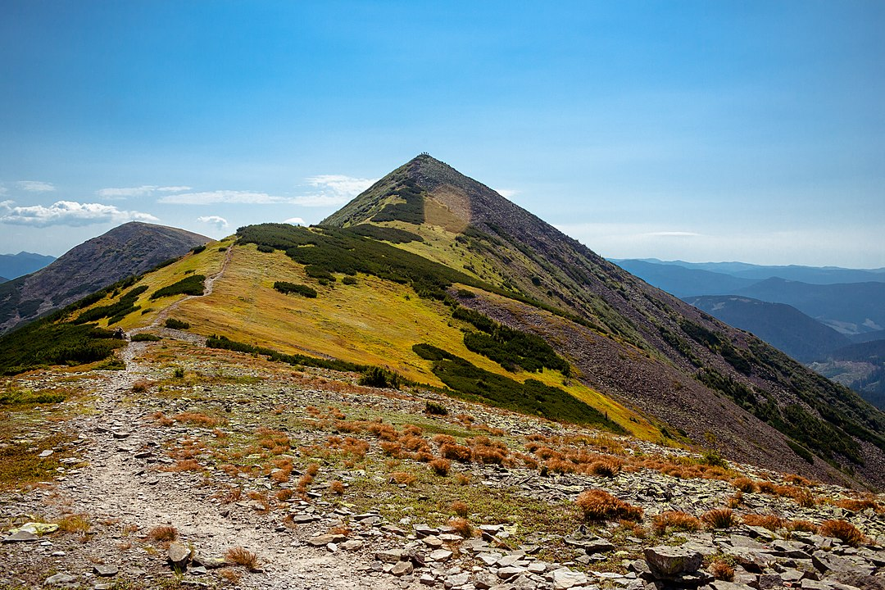

Горгани — це унікальний гірський масив Карпат, який відомий своєю дикою природою, кам'янистими схилами та крутим рельєфом. Тут розташовані мальовничі вершини, такі як Сивуля, Ігровець і Добошанка.
Маршрути Горган є популярними серед досвідчених туристів завдяки їхній складності та незабутнім краєвидам.
